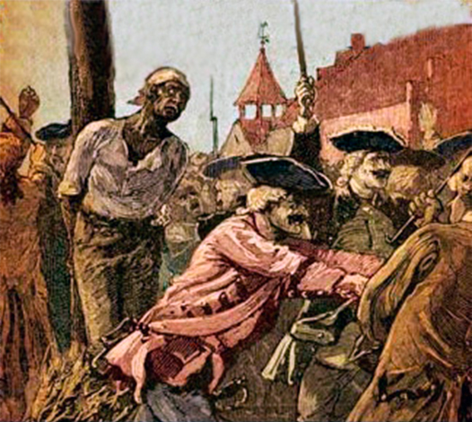
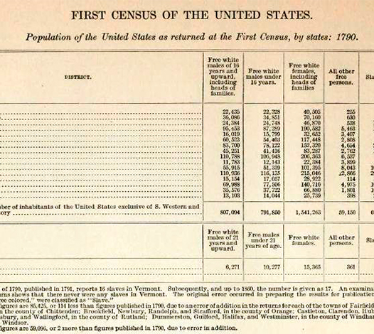
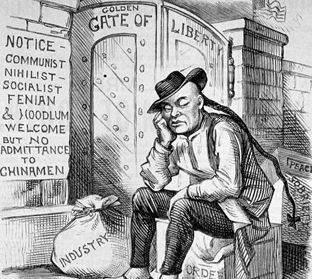
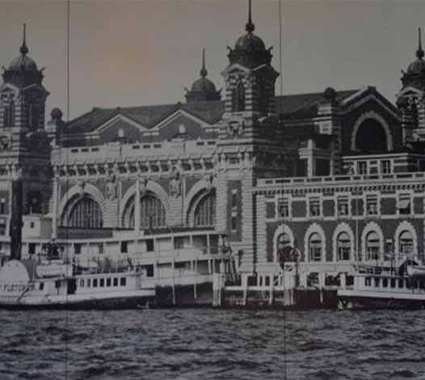
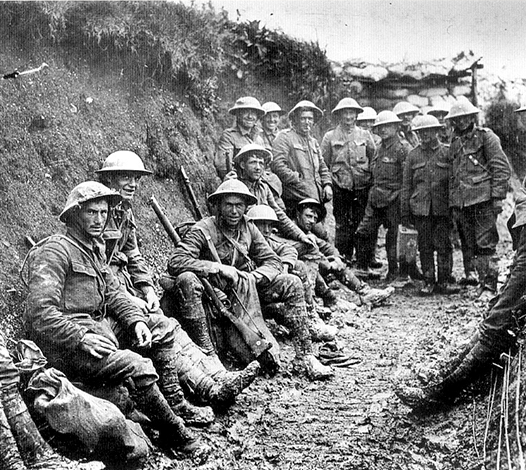
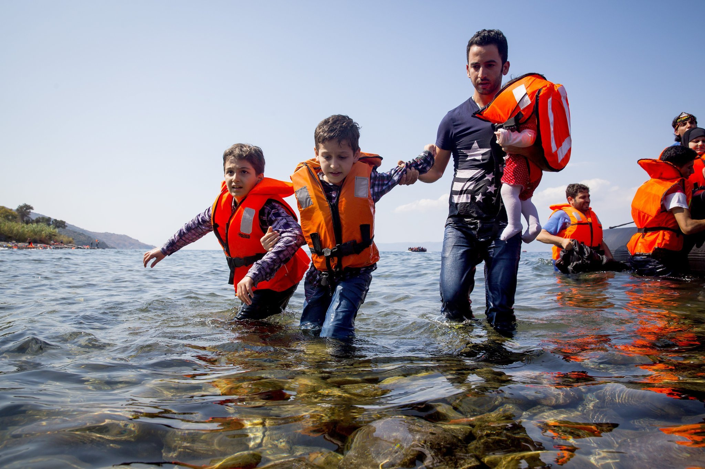
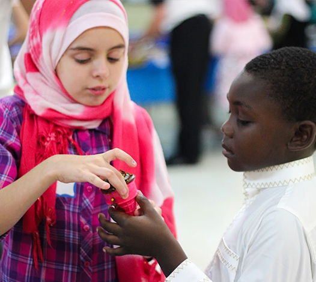

About This Project
The aim of this project is to show the world a different perspective on immigration, a more real and personal approach to this issue. We want people to start seeing immigrants for what the really are, and not just numbers in the newspapers.
Here you will find timelines and data about immigration in New York, but you will also be able to meet these immigrants, throught their own voice as they tell you their stories.
We hope this site gives you a new perspective on immigration and helps you understand this world wide issue.
Immigration Timeline
The history of New York is the history of immigration. From the first humans came here throught the Bering Straits about 20,000 years, to the vikings, europeans and africans who followed later. Some in search of glory and fortune, others running from poverty and disease, and many others brought here against their will.
-
Before 17th Century
More than 10 different tribes of Native Americans lived in the state of New York before the europeans came.
-

1619
As british and spanish colonies establish, slaves are brought from Africa and the caribbean.
-
1700s
Many convicts were part of the new-comers, with over 50.000 prisioners transported from English jails.
-

1790
The first census is completed. English are the largest group, but there is also a significant propotion of slaves, German, Scottish and Irish population.
-
1840s
The Potato Famine leads to more than 1.5 million Irish people emigrating to the U.S.A.
-

1882
The Chinese Exclusion Act is signed, stoping Chinese immigrants to entry the country. This law was valid until 1943.
-

1892
Ellis Island is opened. This iconic monumet received more than 12 million immigrants until it was closed in 1954.
-

1920s
The end of WWI changes atittude towards immigration. Quotas are established, priorizing europeans immigrants.
-
1948
The Displaced Person Act was established, allowing refugees from the WWII to come to the country. Later 38.000 hungarian refugees are received during the cold war.
-
1970s
After the quota system is replaced in 1965 immigration increases, specially from asian and caribean countries. A phenomenon known as "Brain Drain" occurs during this time, as the country attracts doctors, nurses and high-skilled professionals.
-
1980 - 1990s
Crisis in Mexico and neighbord countries increases illegal immigration dramatically.
-
2000
35,9% of NYC population is foreign-born. This means than more than 4.4 million immigrants from over 150 countries.
-
2001
After the terorist attacks in September new migration laws are passed. The U.S.A Patriotic Act tightens the condition for immigrants, investigating people ties with terrorism groups.
-

2010
New York is the third most popular destination for refugees in the U.S.A. with more than 4500 refugees from all over the world.
-

2014
Half of the children in the city are first-generation immigrants.

Communities
Beyond discrimination and rejection some communities fight for immigrants and help them adapt and establish in the city. Here are some examples of communities that help and support immigrants:
Have a Story to Share?
If you would like to share your story with us, comment on one already publish or have any advice, just send an email!